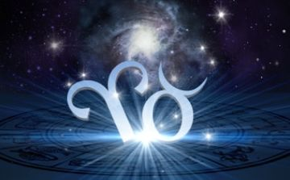

The Ram, also know as Aries, is the first fire sign of the zodiac but ends in April on the 19th. They are ruled by the planet Mars and are described as:
The Bull, also know as Taurus, takes over on the 20th of April. Taurus' are ruled by the planet Venus and desribed as:
An astrological cusp simply means, there is a point where two zodiac signs meet. People born between April 16th and April 22nd, are born on an Aries Taurus cusp. They are desribed as:
From traits listed, both signs have strong personalities. Warning! Look out for people born on a Aries/Taurus cusp! Stubbornness plus aggression and ready for action, means stay out of their war path and don't expect any apologies. There's little need to worry, about either sign being offended by the comments made here.
Photo Sources: http://astrology.care/aries.html http://astrology.care/taurus.html http://astrology.care/taurus.html